채널: 하꼰대 Ha kkondae | 길이: 8:55 | 날짜: 20260613
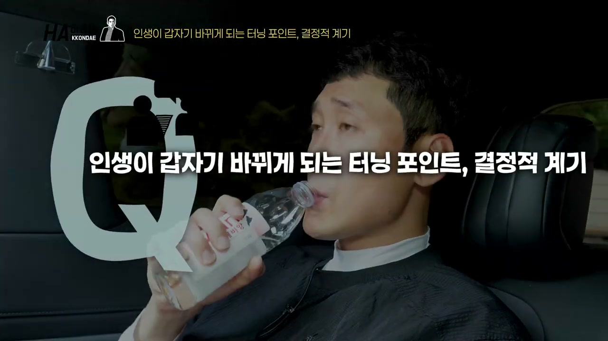
영상은 “인생이 갑자기 바뀌게 되는 터닝 포인트나 결정적인 계기”가 있었는지 묻는 질문으로 시작한다. 진행자는 대표에게 살면서 그런 순간이 있었는지 묻고, 대표는 그런 건 누구에게나 있다고 짧게 답한다. 이 짧은 응답은 영상 전체의 방향을 잡는다. 대표의 관점에서 인생의 전환은 특별한 사람만 겪는 드라마가 아니라, 대부분의 사람이 어떤 형태로든 마주하는 사건이다.
초반 대화는 서로의 터닝 포인트를 묻는 구조다. 진행자는 자신이 영문학과 진학을 준비했고, 고3 때부터 관련 준비를 했으며, 이후 아는 사람에게 영화 시나리오를 쓰게 되면서 광고 일을 하게 되었다고 말한다. 대표는 이를 “제작자를 하려 했던 것”으로 받아들이며, 그것이 하나의 포인트였다고 정리한다. 즉 영상은 처음부터 성공담을 일방적으로 늘어놓기보다, 각자의 길이 예기치 않게 틀어진 순간을 비교하는 방식으로 문을 연다.
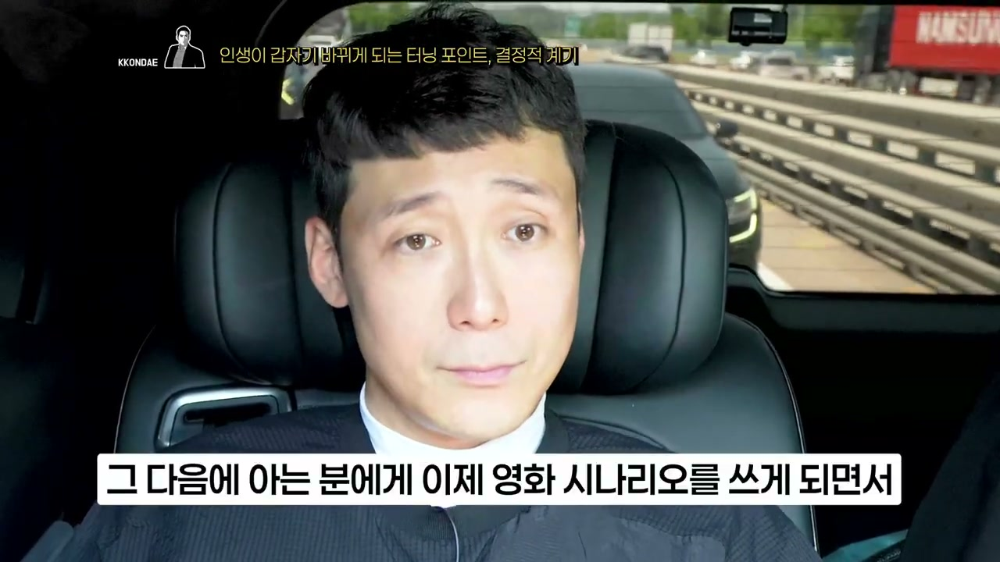
진행자의 사례는 비교적 직업적 방향 전환에 가깝다. 영문학과를 준비하던 학생이 영화 시나리오를 쓰게 되었고, 그 과정에서 광고 일로 이어졌다. 진행자는 결과적으로 원래 목표에서 떨어졌거나 다른 길로 흘러간 느낌을 말하지만, 대표는 그 자체가 하나의 터닝 포인트라고 본다. 이 대목은 대표의 뒤이은 이야기와 대비된다. 진행자의 전환이 “진로가 다른 창작·제작 영역으로 이동한 사례”라면, 대표의 전환은 “몸과 생계, 가족 책임이 걸린 사건”으로 훨씬 강하게 제시된다.
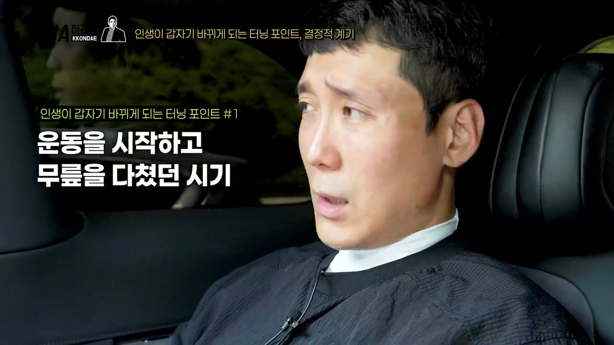
대표는 자신의 가장 큰 터닝 포인트 중 하나로 학생 때 운동을 시작한 일을 꼽는다. 그리고 스무 살 무렵 타이틀전을 준비하다가 무릎을 다친 일을 이어서 말한다. 자막에는 반월상연골판 절제나 연골 관련 표현이 흐릿하게 등장하는데, 핵심은 오른쪽 무릎을 크게 다쳤고 여러 차례 치료를 받았다는 점이다. 그는 원래 이 길로 밥을 먹고 살 수 있을 것이라 생각했지만, 부상으로 그 기대가 꺾였다.
여기서 부상은 단순한 신체 손상이 아니다. 대표가 상상하던 미래 전체를 바꾸는 사건이다. 그는 자신이 운동으로 살거나 경호, 특수부대, 군 관련 진로를 밟을 것이라 기대했다. 하지만 무릎이 “날아갔다”고 표현할 정도의 부상은 그 경로를 닫았다. 그래서 이 사건은 단순한 좌절이 아니라 인생의 진로표가 바뀐 순간이다.
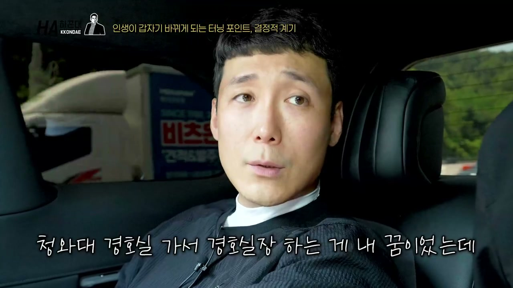
대표의 원래 꿈은 청와대 경호실에 들어가 경호실장이 되는 것이었다. 이를 위해 경호학과, UDT, 선수 생활 같은 루트를 상상했다. 이 계획은 몸이 강해야 하고, 훈련을 견딜 수 있어야 하며, 무릎이나 체력 문제가 없어야 가능한 경로였다. 대표에게 무릎 부상은 바로 이 미래를 끊는 사건이었다.
그는 일상생활은 괜찮을지 몰라도 선수 생활이나 특수부대 같은 길은 어렵겠다고 판단했다. 군대도 쉽게 가기 어렵다고 느꼈고, 결국 경호실장이라는 꿈은 현실성이 떨어졌다. 중요한 점은 그가 당시 그 사건을 “인생 좌절의 포인트”로 받아들였다는 것이다. 그러나 지금은 그 좌절이 아니었다면 현재의 자신도 없었을 것이라고 말한다.
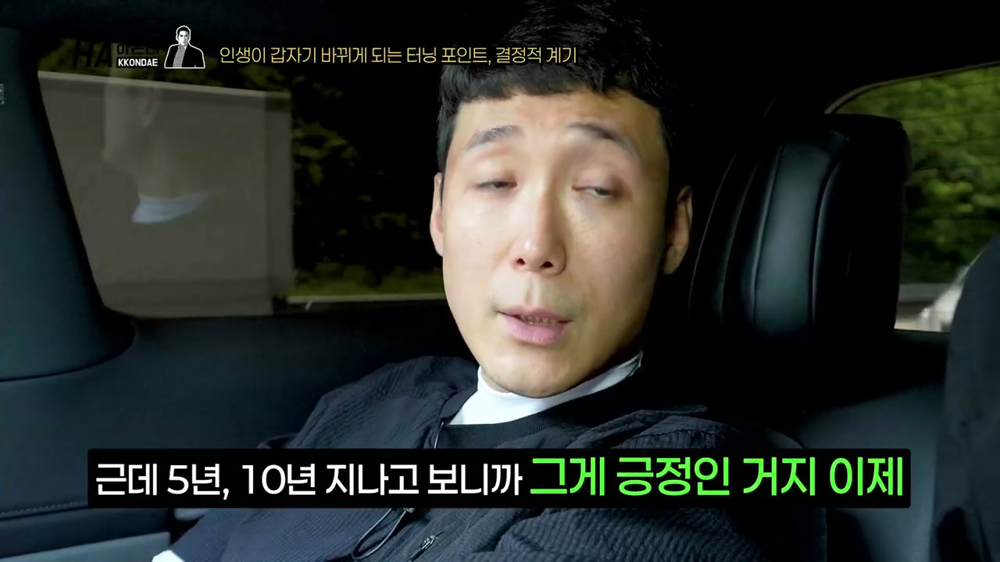
대표는 당시에는 좌절이었지만 지금 생각하면 감사한 포인트라고 말한다. 만약 그 일이 없었다면 자신이 지금 무엇을 하고 있을지 가끔 생각한다고 한다. 그는 우스갯소리로 자신이 “시정 잡배”처럼 살았을지도 모른다고 표현하지만, 바로 이어서 청와대 경호실에 들어갈 실력도 안 되었을 가능성, UDT 같은 길을 버티기 어려웠을 가능성도 말한다. 즉 좌절이 없었다면 더 좋은 길을 갔을 것이라고 단정하지 않는다.
이 지점이 영상의 핵심이다. 대표는 인생의 터닝 포인트가 대개 당장 좋은 모양으로 오지 않는다고 본다. 처음에는 “어떡하지?”, “여기서 무엇을 선택해야 하지?”라는 압박으로 온다. 그래서 바닥을 찍는 경험이 훗날에는 방향 전환의 시작점이 된다. 그는 주변 사람들을 보아도 그런 경우가 많다고 말한다.
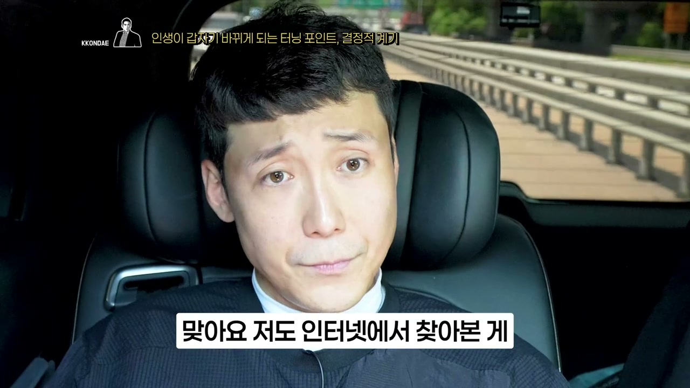
진행자는 인터넷에서 찾아본 바에 따르면 대부분의 터닝 포인트가 바닥을 한 번 제대로 찍었을 때라고 말한다. 대표는 그 말에 동의하면서도, 바닥에는 여러 종류가 있다고 덧붙인다. 감정적 바닥일 수 있고, 금전적 바닥일 수 있고, 인간관계적 바닥일 수도 있다. 즉 바닥은 단일한 형태의 실패가 아니라 개인마다 다른 방식으로 찾아오는 한계 상황이다.
대표는 그런 바닥이 당시에는 긍정적 포인트가 아닐 때가 많다고 강조한다. 하지만 5년, 10년이 지나 보면 그 사건이 긍정으로 바뀌어 보일 수 있다. 이 시간의 거리감이 중요하다. 터닝 포인트는 발생 직후가 아니라, 시간이 지나고 삶이 재구성된 뒤에야 의미가 해석되는 경우가 많다는 것이다.
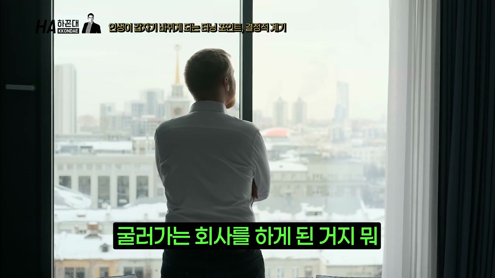
진행자는 사업에 발을 담그게 된 포인트가 무엇인지 묻는다. 대표는 청와대 경호실에 갈 수 없는 진로가 나왔고, “뭐 하지?” 하다가 부동산을 시작했다고 말한다. 부동산은 결국 사업이고, 그 과정에서 하나씩 배우다 보니 회사가 굴러가게 되었다고 설명한다. 그는 이를 운이 좋아서 회사가 잘 돌아가게 된 것처럼 표현하지만, 실제 흐름은 막힌 진로 뒤에 새로운 영역을 배우고 반복한 결과다.
대표는 부동산에서 사업까지 간 것인지 묻는 질문에, 부동산 자체가 사업이라고 답한다. 이 대답은 그의 사업관을 보여준다. 사업은 거창한 창업 선언만이 아니라, 자산과 거래와 운영을 배우며 시스템을 굴리는 과정이다. 따라서 그의 사업가 정체성은 애초부터 “회사를 세워야겠다”는 목표에서 출발했다기보다, 막힌 진로 이후 현실적으로 밟아간 경로에서 형성되었다.
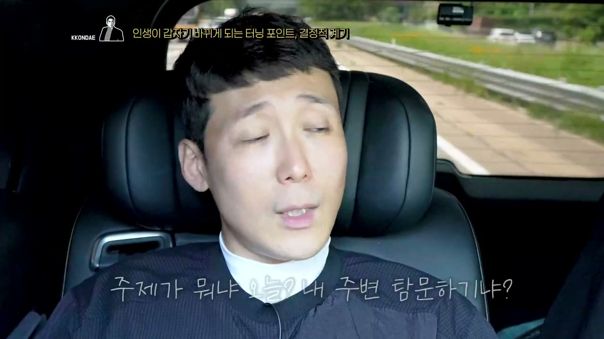
대표는 무릎 부상이 없었다면 지금까지 열심히 운동하면서 체육학과 교수 같은 일을 했을 수도 있다고 말한다. 말은 잘하는 편이었기 때문에 가르치는 일도 가능했을 것 같다고 본다. 그는 그 삶 역시 훌륭하고 좋은 일이라고 인정한다. 그러나 현재 자신의 인생보다 재미는 덜했을 것 같다고 평가한다.
이 평가는 현재 삶을 우월하게 만들기 위한 과장이 아니다. 오히려 인생의 방향은 어느 하나가 절대적으로 정답이라기보다, 특정 사건이 개인에게 더 맞는 길을 열 수도 있다는 관점에 가깝다. 대표는 부상이라는 사건이 없었다면 안정적이고 존중받는 길을 갔을 수 있지만, 지금의 다양성과 사업적 재미는 없었을 것이라고 본다. 그래서 부상은 손실이면서 동시에 새로운 흥미의 시작점이다.
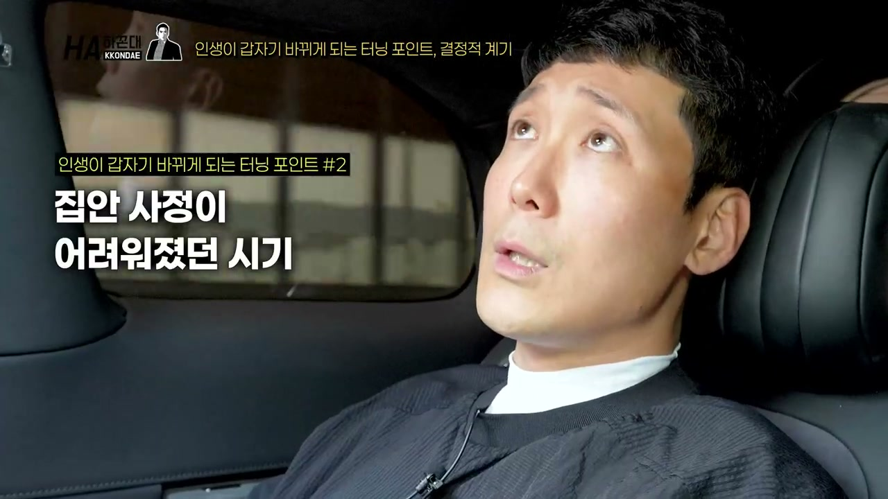
진행자가 주변 사람들의 기억나는 터닝 포인트를 묻자, 대표는 자신이 남의 인생을 그렇게 깊게 알지 못한다고 답한다. 그는 먹고살기도 바쁜 사람이고, 남의 나무에는 별 관심이 없는 사람이라는 취지로 농담한다. 이 말은 단순한 회피가 아니라, 대화의 초점을 외부 사례가 아니라 자기 경험으로 돌린다. 진행자도 질문을 바꾸어, 그렇게 열심히 일하게 된 포인트가 무엇인지 묻는다.
이 전환은 영상의 두 번째 핵심 서사로 이어진다. 앞부분이 “무릎 부상과 진로 좌절”이었다면, 뒤쪽은 “가족의 경제적 추락과 돈에 대한 각성”이다. 대표는 이 이야기를 꺼내기 전 매우 조심스럽다고 말한다. 자신의 부모 이야기가 부모님의 얼굴에 먹칠하는 것처럼 보일까 우려하기 때문이다.
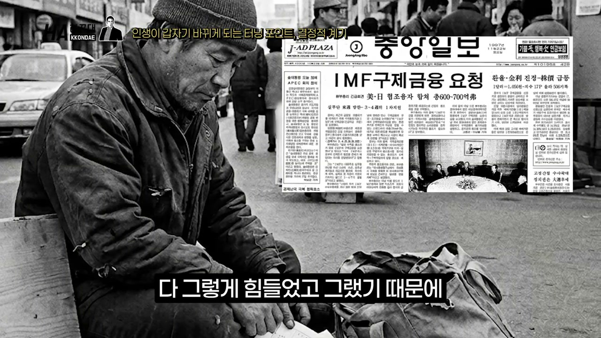
대표는 중학교 때의 이야기이며, 1997년 무렵이라고 말한다. 그는 이 이야기가 부모님의 삶의 방식이 틀렸기 때문에 벌어진 일처럼 비칠 수 있다고 조심한다. 하지만 곧 그것은 아니라고 정정한다. 당시 시대 자체가 부모 세대 모두에게 힘들었고, 자신만 어렵게 산 것이 아니라 같은 시대를 살아온 많은 아이들이 비슷한 어려움을 겪었다고 설명한다.
이 대목은 중요하다. 대표는 개인의 결핍을 성공담의 재료로 쓰면서도, 그것을 부모 개인의 책임으로 몰아가지 않는다. IMF 시기와 시대적 경제난이라는 배경을 놓고 자신을 그 시대의 한 사람으로 본다. 그래서 이야기는 “부모가 잘못해서 내가 고생했다”가 아니라, “그 시대의 압박 속에서 내가 어떤 장면을 보고 마음을 먹게 되었다”로 정리된다.
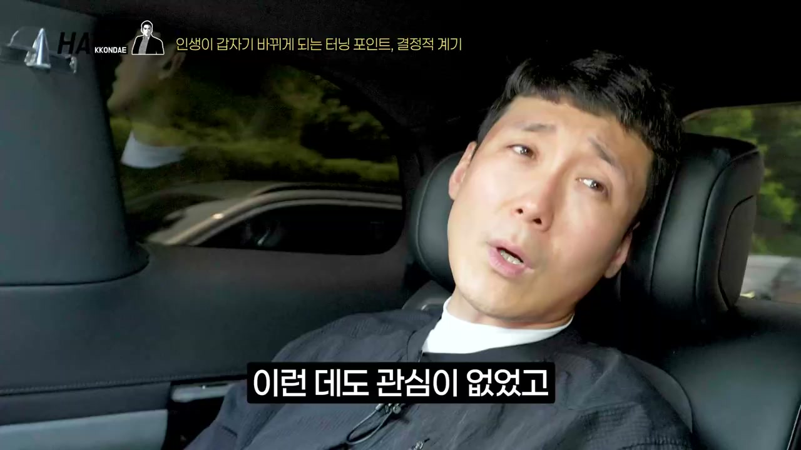
대표는 중학교 전까지 자신이 사는 데 별 관심이 없던 아이였다고 말한다. 물건을 사는 취미도 없고, 옷을 사 달라고 부모에게 조른 적도 거의 없었다. 자신을 꾸미는 데도 관심이 없었고, 기껏해야 돈가스를 사 달라고 하는 정도였다고 회상한다. 앞으로 무엇을 해서 먹고살지에 대해서도 전혀 생각하지 않았다.
이 설명은 뒤의 변화가 얼마나 급격했는지 보여준다. 돈과 미래에 무관심했던 아이가 어느 순간 돈을 벌어야 한다고 마음먹게 된다. 그 변화는 자기계발서식 목표 설정이 아니라, 가족의 생존 조건을 직접 보면서 생긴다. 그래서 대표에게 돈은 욕망의 대상이라기보다 가족을 지키기 위한 현실 언어로 먼저 등장한다.
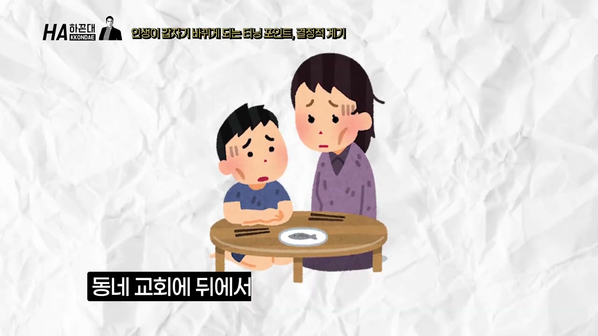
대표는 중학교 3학년 때 집안이 빚에 시달렸고, 집이 경매에 넘어갔다고 말한다. 집이 없어졌다는 표현을 하면서도, 그 상황이 말로 설명하면 이상하게 들릴 수 있다고 덧붙인다. 아버지는 잠시 지방에 내려가 있었고, 어머니와 자신은 잘 곳이 없어 동네 교회 뒤에서 한 달가량 잤던 기억을 말한다. 그는 교복과 옷 몇 벌만 갖고 있었고, 그것이 진짜 집이 없는 상태였다고 회상한다.
그런데 당시 그는 그 상황을 깊게 자각하지 못한 것 같다고 말한다. 그냥 “여기서 자면 자는 것”처럼 받아들였고, 마음이 비교적 편한 편이었다고 설명한다. 이 대목은 가난을 극적으로만 소비하지 않는다. 어린아이가 생존 환경을 완전히 이해하지 못한 채 적응하는 모습을 통해, 훗날의 각성이 더 강하게 대비된다.
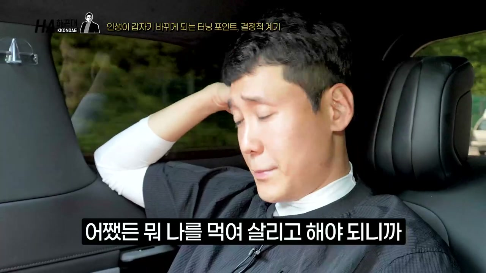
어느 날, 원래 일을 하지 않던 어머니가 공장에 나가 일하기 시작했다. 아버지가 곁에 없고 먹고살아야 했기 때문이다. 대표는 어머니가 돌아와 코를 푸는 모습을 보았다. 당시 안전 시설이 충분하지 않았던 공장에서 일한 것으로 추정하며, 휴지에 은색 쇳가루나 은가루 같은 것이 묻어나왔다고 말한다.
그는 그 장면을 뒤에서 몰래 보았다고 한다. 그 순간 돈이 없어서 가족이 흩어지고, 집이 빼앗기고, 압류 딱지가 붙고, 어머니가 건강을 해치며 일해야 하는 현실을 깨달았다. 어머니가 건강해 보이지 않는데도 힘들게 살아야 한다는 사실이 그에게 강한 충격을 주었다. 그때 자신이 집안의 남자로서 돈을 벌어야 한다고 마음먹었다.
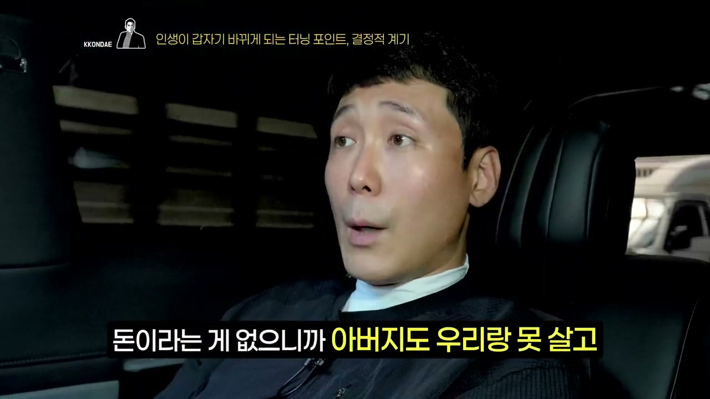
대표가 말하는 돈은 단순한 부의 상징이 아니다. 돈이 없으면 아버지도 함께 살 수 없고, 집도 지킬 수 없고, 가족의 건강도 보호하기 어렵다는 현실의 상징이다. 그는 그 장면을 본 뒤 자신이 돈을 좀 벌어야겠다고 마음을 굳혔다. 그 순간이 지금도 생생하게 기억난다고 한다.
이 장면은 대표가 평생 잊지 못하는 장면이다. 그는 어머니의 모습을 본 것과 자신이 마음을 굳혀 먹은 순간을 함께 기억한다. 그다음 날부터 무엇을 해야 돈을 많이 벌 수 있을지에 관심이 갔다고 말한다. 이때부터 그의 관심사는 공부나 취미가 아니라, 생존을 가능하게 하는 돈을 버는 길로 이동했다.
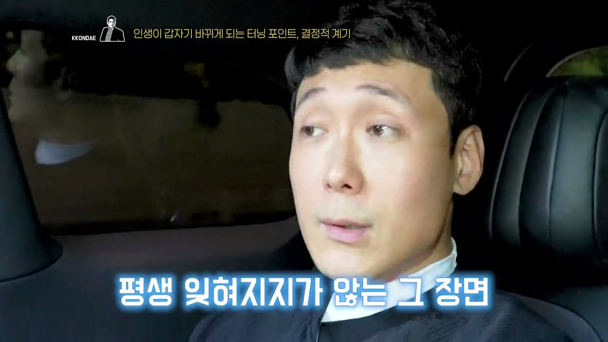
대표는 자신이 공부는 못한다고 생각했다. 그래서 예체능, 음악, 운동 같은 방식으로 성공할 수 있는지를 떠올렸다. 특히 운동을 해서 K1 같은 무대에 가면 돈을 많이 벌 수 있겠다고 생각한 것으로 말한다. 즉 어린 시절의 경제적 충격은 그를 운동 쪽으로 밀어붙이는 동력 중 하나가 되었다.
여기서 중요한 것은 선택의 폭이 넓지 않았다는 점이다. 그는 학업으로 성공하는 길을 자신에게 맞는 길로 보지 않았다. 대신 몸, 재능, 무대, 승부 같은 영역에서 돈을 벌 방법을 찾았다. 앞부분의 운동과 무릎 부상 이야기가 이 가족사와 연결되면서, 그의 진로는 단순한 취미가 아니라 생계 압박에서 나온 선택으로 보인다.
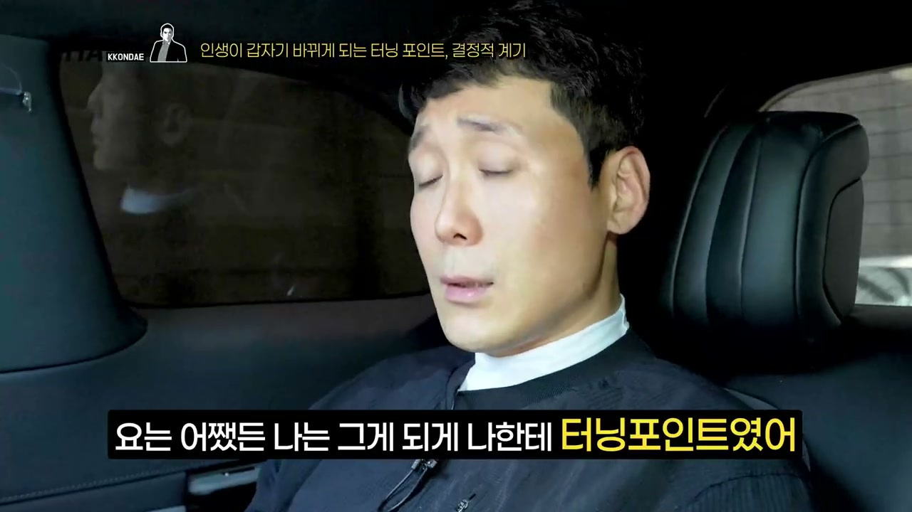
대표는 그 결핍이 자신에게 매우 강력한 원동력이라고 말한다. 그는 자신이 지칠 이유가 없다고 표현한다. 아무리 힘들어도 중학교 3학년 때 교회 뒤 시멘트 바닥에서 자던 때만큼 힘들지 않다고 보기 때문이다. 고등학교 때 학비 지원을 받고, 친구들 앞에서 무료 식권을 받으며 살던 때도 있었지만, 그것 역시 지금의 힘든 일과 비교하면 견딜 수 있는 기준점이 되었다.
이 기준점은 대표의 회복력과 추진력을 만든다. 그는 편의점에서 삼각김밥을 여유 있게 사 먹을 수 있는 삶이면 이미 바닥은 아니라고 느낀다. 그래서 밑바닥이 크게 무섭지 않다. 이것이 그가 사업과 도전을 계속할 수 있는 심리적 기반이다.
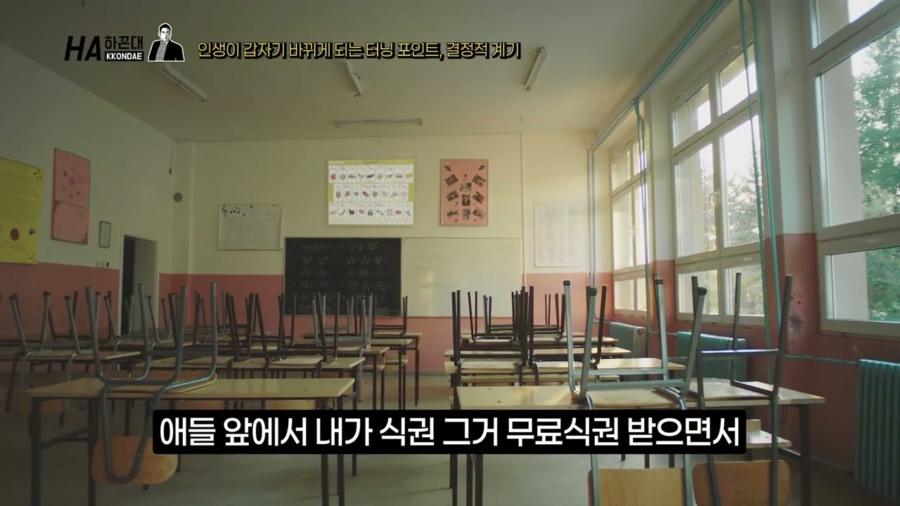
하지만 대표는 결핍이 반드시 좋은 것만은 아니라고 한다. 그는 집안이 유복한 사람들을 많이 만나며, 결핍이 없는 삶이 꼭 단점만은 아니라는 사실도 느꼈다고 말한다. 반대로 자신처럼 결핍을 가진 사람은 너무 독하게 사는 문제가 있다고 본다. 독함은 추진력일 수 있지만, 동시에 삶을 유연하게 운영하지 못하게 만드는 단점이 될 수 있다.
그는 2세를 낳으면 아이에게 자신만큼의 결핍이 없을 것이라는 점을 고민한다. 결핍을 직접 주입한다고 생기는 것이 아니며, 아이에게 강제로 가르친다고 되는 것도 아니라고 본다. 아이가 스스로 충격을 받아야 한다는 식으로 말하지만, 동시에 그것을 어떻게 해야 할지 모르겠다고 한다. 이 대목에서 결핍은 성공 공식이 아니라 교육적으로 다루기 어려운 모순으로 바뀐다.
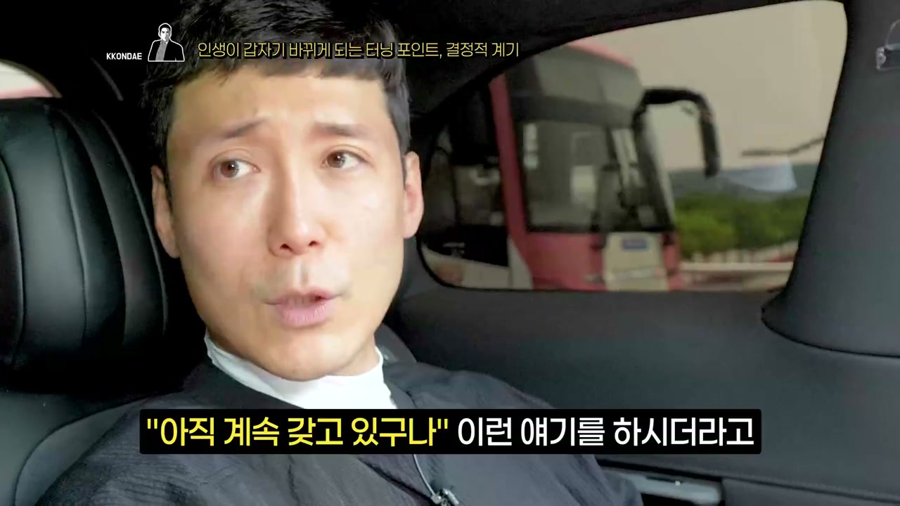
대표는 자산이 많은 친한 형에게 들은 조언을 소개한다. 그 형은 대표가 아직도 0에서 100을 만들려는 버릇을 갖고 있다고 말했다. 100에서 1000을 만들면 10배만 해도 900이 남는데, 결핍을 가진 사람은 계속 0에서 100을 만드는 방식에 익숙하다는 것이다. 이는 창업과 사업 운영 방식에 대한 매우 실질적인 분석이다.
대표는 사업을 할 때도 새로 창업하고, 사람을 세팅하고, 처음부터 만드는 방식에 익숙하다고 말한다. 반면 자산과 경험이 있는 사람들은 이미 갖추어진 회사를 사서 키운 뒤 파는 방식이 더 익숙할 수 있다. 대표는 그런 표현을 들으며 자신에게 부족한 부분을 인정한다. 그는 조금 더 술에 술 탄 듯, 물에 물 탄 듯 유연하게 하고, 약간 손해가 나더라도 돌아가게 만드는 능력이 부족하다고 본다.
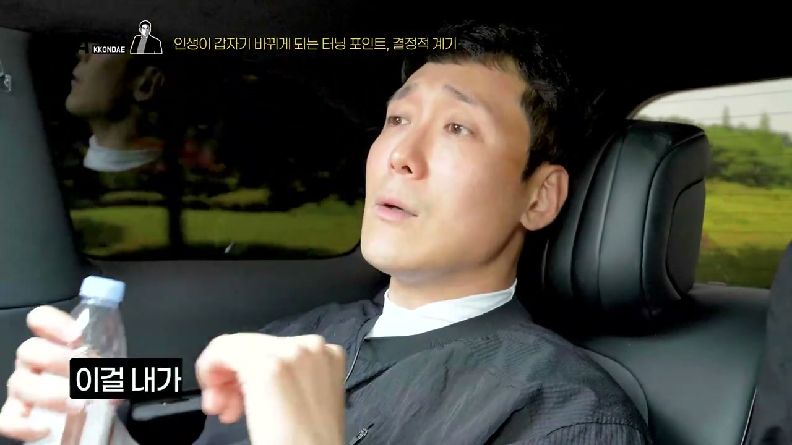
대표의 마지막 고민은 자녀 교육이다. 그는 아이가 힘들지 않았으면 좋겠다고 말한다. 그러나 동시에 아이가 나약해지는 것은 싫다고 한다. 이 두 마음은 서로 충돌한다. 부모로서는 아이를 보호하고 싶지만, 자신을 만든 강한 원동력이 결핍에서 왔다는 것을 알기 때문이다.
그는 이 모순을 깨뜨릴 수 있는 교육을 하고 싶다고 말한다. 대한민국이든 세계 어디든, 사업가와 가정을 가진 사람들에게 공통된 염원 중 하나는 아이가 힘들지 않으면서도 강하게 자라는 것이라고 본다. 그는 2세, 3세가 교육 과정을 거치며 정신적으로 단련되는 프로세스를 만들고 싶다고 한다. 이는 단순한 훈육이 아니라, 결핍의 충격을 안전하게 체험하게 하는 교육 실험에 가깝다.
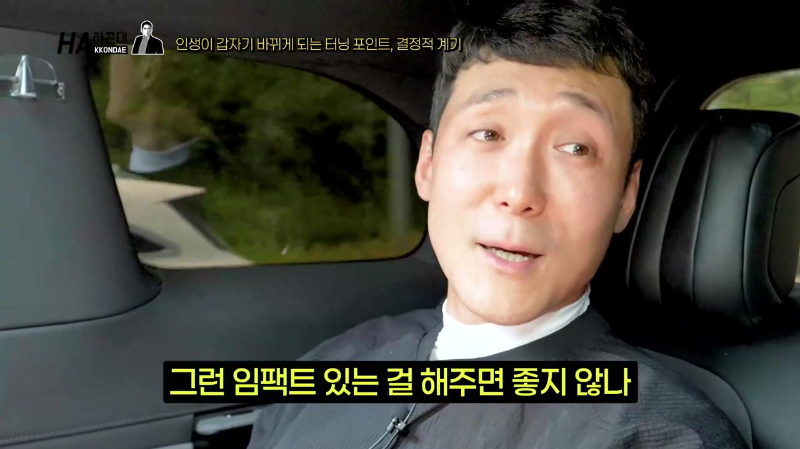
대표는 차압 딱지가 붙는 상황, 돈이 없어 길거리에서 자는 상황 같은 것을 시뮬레이션해 주는 교육을 상상한다. 물론 말투는 농담처럼 섞여 있지만, 의도는 명확하다. 아이에게 실제 결핍을 주고 싶지는 않지만, 결핍이 주는 정신적 충격과 현실감은 알려주고 싶다는 것이다. 그는 그런 임팩트 있는 교육이 가능하다면 큰 사업적 가치도 있을 것이라고 본다.
이 구상은 위험한 면도 있다. 결핍을 흉내 내는 교육이 실제 결핍의 복잡함을 충분히 전달할 수 있는지, 아이에게 상처가 되지 않으면서 강한 마음을 만들 수 있는지는 별개의 문제다. 대표도 그것을 단순히 답으로 제시하지 않고, 나중에 10년쯤 더 지나 여유가 생기면 해보고 싶은 일 중 하나라고 말한다. 그래서 영상은 결론을 완전히 닫지 않고, 결핍을 어떻게 계승하거나 교육할 것인가라는 질문으로 마무리된다.
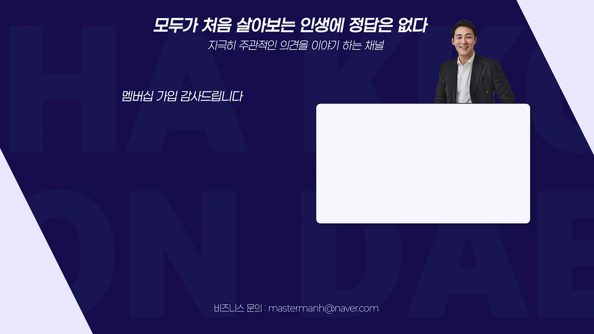
마지막 구간은 음악과 엔딩 카드로 정리된다. 채널의 문구는 “모두가 처음 살아보는 인생에 정답은 없다”는 메시지를 담고 있다. 이 문구는 영상 내용과 잘 맞는다. 대표의 삶도 처음부터 정답을 알고 간 것이 아니라, 부상과 가난과 책임과 시행착오가 뒤섞이며 만들어진 경로였기 때문이다.
“다 있지 뭐.”
“그게 긍정인 거지.”
“돈을 좀 벌어야 되는 거야.”
“지칠 이유가 없는 거야.”
이 발언들은 모두 짧지만 영상의 핵심을 압축한다. 첫 번째는 누구에게나 전환점이 있다는 인식이고, 두 번째는 시간이 지나야 좌절이 긍정으로 보인다는 관점이다. 세 번째는 대표의 돈에 대한 각성이 욕망보다 책임에서 출발했다는 점을 보여준다. 네 번째는 결핍이 이후의 노동과 사업 추진력으로 바뀐 방식을 보여준다.
이 영상의 핵심 메시지는 터닝 포인트가 대개 멋진 기회가 아니라, 기존 길이 무너지는 순간으로 찾아온다는 것이다. 대표에게 첫 번째 전환은 운동과 무릎 부상으로 경호실장이라는 꿈이 막힌 일이었고, 두 번째 전환은 가족의 경제적 추락과 어머니의 공장 노동을 목격한 일이었다. 두 사건은 당시에는 좌절과 충격이었지만, 시간이 지나 사업과 책임감, 추진력의 원천으로 재해석되었다.
실용적 시사점은 세 가지다. 첫째, 지금의 실패가 장기적으로는 다른 능력을 깨우는 계기가 될 수 있다. 둘째, 결핍은 강한 원동력이 될 수 있지만, 동시에 너무 독하게 살고 0에서 다시 시작하는 방식에 집착하게 만드는 단점도 있다. 셋째, 다음 세대에게 결핍 없이 강함을 가르치는 일은 매우 어려운 문제이며, 단순한 훈계가 아니라 체감과 시뮬레이션, 안전한 훈련 구조가 필요하다.
결국 이 영상은 “바닥을 찍어야 성공한다”는 단순한 성공담이 아니다. 바닥을 겪은 사람이 그 경험을 어떻게 해석하고, 그 힘을 어떻게 쓰며, 그 힘의 부작용을 어떻게 인식하는지에 관한 이야기다. 대표는 자신의 결핍을 미화하지 않으면서도 그것이 자신을 움직인 핵심 동력이었다고 말한다. 그래서 영상의 결론은 정답이 아니라 질문에 가깝다: 사람은 어떻게 무너지지 않고, 무너진 경험을 다음 삶의 방향으로 바꿀 수 있는가.
댓글
GitHub 이슈 기반 댓글 시스템입니다.